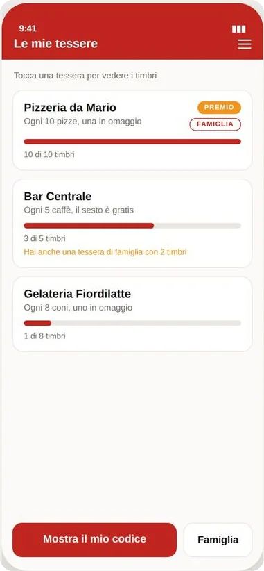
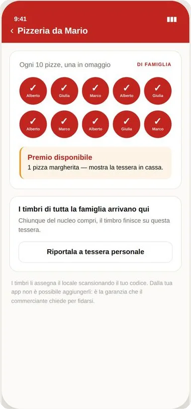
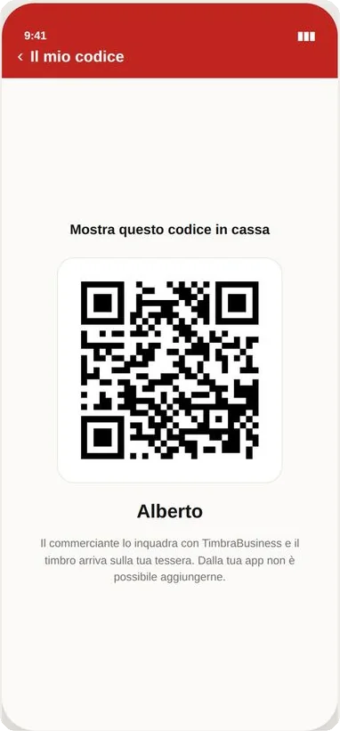
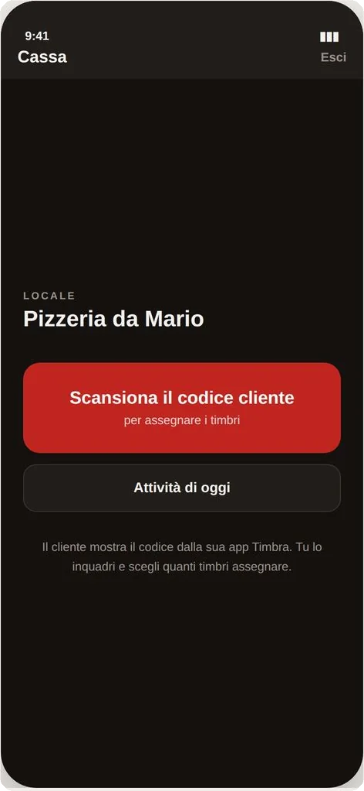
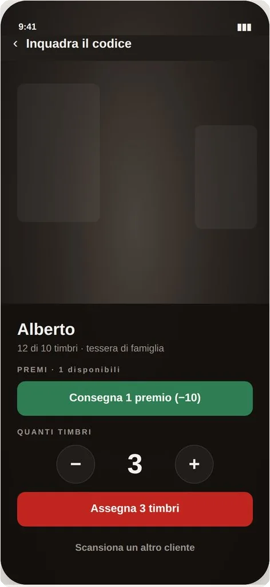
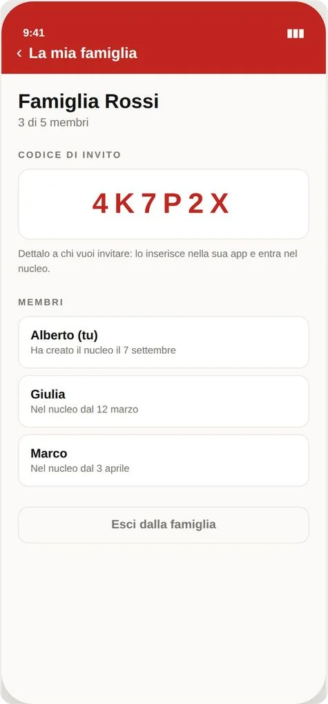
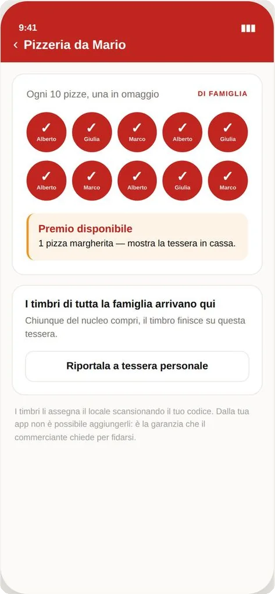
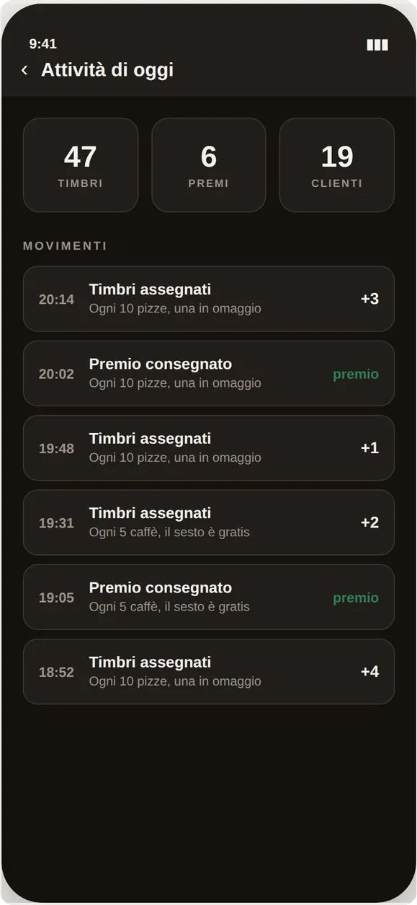

Presentazione
La tessera fedeltà che i tuoi clienti non perdono più.
Sei arrivato qui perché hai un locale, o perché vuoi capire com'è fatta Timbra prima di scaricarla. In tutti e due i casi: questa è la presentazione intera, le stesse schermate che porto quando vengo di persona.
Il problema che conosci già
Il cartoncino sparisce nel portafoglio, e quando il cliente torna ricomincia da zero. Il premio non arriva mai.
Stasera ordina la moglie, domani il marito, sabato il figlio. Tre tessere diverse, tre progressi separati, nessuno che arriva al traguardo.
Quante tessere hai dato via? Quante sono tornate complete? Ogni quanto tornano i tuoi clienti abituali? Il cartoncino non te lo dice.
La tessera fedeltà del tuo locale diventa digitale, si condivide in famiglia e vive nella stessa app dove il cliente tiene quelle degli altri locali della zona.
Cosa vede il tuo cliente



Il cliente scarica Timbra, e dentro ci trova tutte le tessere dei locali della zona dove è stato. Non deve iscriversi a niente prima di entrare da te: la tessera nasce da sola la prima volta che gli timbri qualcosa.
Quando si avvicina al premio glielo ricordiamo noi, con un avviso sul telefono. Quando la tessera è piena lo vede appena apre l'app, e lo vedi anche tu in cassa.
Timbra si scarica gratis da App Store e Google Play. Il cliente si registra con la sua email una volta sola: se cambia telefono, rientra e ritrova tutte le sue tessere.
Cosa fai tu in cassa


Compare il nome del cliente, così sai che stai timbrando la persona giusta, e vedi subito a che punto è la sua tessera.
Quando ha diritto al premio, il tasto verde te lo dice da solo. Lo consegni e premi: il sistema scala i timbri della promozione e lascia al cliente l'avanzo. Se aveva 12 timbri su una tessera da 10, dopo il premio gliene restano 2 — non riparte da zero, e non ci sono discussioni al bancone.
Un timbro dato per errore si toglie subito con il tasto meno. Ogni timbro resta registrato con l'ora e con chi l'ha dato, così a fine giornata i conti tornano.
Se manca la rete, l'app registra lo stesso i timbri e li tiene sul telefono. Partono da soli appena torna il campo, e nessuno va perso. Il cliente non si accorge di niente.
I timbri li può assegnare solo chi entra in TimbraBusiness con le credenziali del tuo locale. Il cliente, dalla sua app, non ha alcun modo di aggiungerseli. E non è un blocco dell'interfaccia che si aggira con un trucco: è il sistema stesso che rifiuta la scrittura, a livello di database.
La tua tessera, su misura
La tessera la scegliamo insieme, guardando il tuo menu e come lavori.
Un timbro per ogni birra, caffè, poke o visita. Al decimo, il premio. È la tessera che tutti capiscono senza spiegazioni, quella di sempre.
In cassa batti l'importo del conto e i punti li calcola l'app: per esempio 1 € = 1 punto, premio a 100. È la più giusta quando i conti sono molto diversi, perché chi spende di più arriva prima.
La tessera è una pizza che si riempie una fetta alla volta. Per le pizzerie è la più simpatica da vedere, e funziona come i timbri.
La soglia va messa in modo che un cliente abituale arrivi al premio in circa un mese. Se ci vogliono sei mesi, la tessera finisce dimenticata e non riporta nessuno. Il premio è un tuo prodotto, non uno sconto sul piatto che ti fa guadagnare: costa poco a te e vale tanto per il cliente.
Premio, soglia e condizioni (per esempio «premio non ritirabile il sabato») si cambiano quando vuoi: me lo dici e lo sistemo. Le condizioni il cliente le legge sulla sua tessera.
Puoi decidere che i timbri valgano per un certo numero di mesi. Il cliente vede la data sulla tessera e riceve un avviso prima della scadenza: è un motivo in più per tornare. Se non la vuoi, non c'è.
La tessera di famiglia
Questa è la parte che il cartoncino non può fare in nessun modo.


Fino a cinque persone dello stesso nucleo condividono una tessera sola. Il premio arriva davvero, e il nucleo continua a scegliere te.
Chi ha già una sua tessera personale, quando entra in famiglia, sceglie se unire i timbri che ha già o tenere le due tessere separate. Nessuno perde niente.
Una persona può stare in un solo nucleo alla volta: è un vincolo del sistema, non una regola scritta da qualche parte. Serve a evitare che un buono guadagnato da una famiglia finisca in mano a qualcun altro.
Gli avvisi della tessera di famiglia arrivano a tutti i suoi membri: basta che uno passi da te.
A ritirare il premio non viene uno: viene la famiglia, con fame.
Qui dietro c'è un
ALGORITMO
Ogni notte guarda le tessere del tuo locale e trova chi sta per tornare. Il cartoncino non può parlare. L'app sì — ed è la differenza che si sente sull'incasso.
“Ti manca poco” — quando al cliente mancano pochi timbri al premio (da quattro in giù, e mai prima di metà tessera). Sulle tessere a punti parla in euro: «ti mancano 20 € di spesa». È il momento in cui la voglia di tornare è più alta, e con la carta quel promemoria non esiste.
“È un po' che non passi” — quando un cliente che veniva sparisce per un po' di tempo. Quelli che perdevi senza accorgertene, te li riprende uno per uno.
“I tuoi timbri stanno per scadere” e “ultimo giorno domani” — solo se la tua tessera ha la scadenza.
Non li devi gestire tu: ogni notte il sistema guarda le tessere e sceglie a chi scrivere. Gli avvisi arrivano di pomeriggio, nei giorni dopo l'ultimo timbro, non nello stesso momento. La tessera piena, invece, il cliente la vede appena apre l'app.
Sono i messaggi del tuo locale — che scriviamo insieme, quando ti servono. Arrivano sul telefono delle persone che hanno già una tessera del tuo locale: non a sconosciuti, ma a chi da te c'è già stato.
La campagna arriva come notifica a chi ha accettato di ricevere le promozioni, e per 24 ore compare anche dentro l'app, in cima alle tessere, a tutti quelli che hanno la tessera del tuo locale. Nessun costo a messaggio.
“Stasera 2x1 sulla margherita.”
“Da domani c'è la nuova bufala.”
“Martedì sera, birra offerta con la pizza.”
Mi chiami e mi dici cosa vuoi ottenere — riempire il martedì, lanciare un prodotto, far tornare chi manca da un mese. Il testo e il momento li curo io. Non ti consegno un pannello da configurare da solo.
I limiti delle notifiche
Queste regole sono scritte dentro il sistema, e non è una scusa: è una scelta di come è fatta l'app.
| Dal tuo locale | massimo una notifica ogni 72 ore allo stesso cliente |
| In totale | massimo due al giorno, contando tutti i locali dell'app |
| Di notte | mai fra le 22 e le 8 |
| Quando arrivano | di pomeriggio, nei giorni dopo l'ultimo timbro |
| Il cliente può | silenziare il tuo locale quando vuole, senza disinstallare l'app |
| La pubblicità | è un consenso separato: il cliente la accende lui, e può spegnerla |
E per le campagne c'è una regola in più, che tengo io: mai di notte, e al massimo una ogni tre giorni.
Sembra una limitazione. È esattamente il contrario.
Se ogni locale potesse mandare messaggi a piacere, i clienti disinstallerebbero l'app nel giro di un mese — e tu perderesti il canale insieme a tutti gli altri. Il limite è ciò che tiene vivo il canale che stai comprando.
Una notifica che arriva raramente viene letta. Una che arriva ogni giorno viene silenziata, e poi l'app viene cancellata. È anche il motivo per cui poche campagne, scritte bene e mandate al momento giusto, rendono più di trenta mandate a caso.
I numeri del tuo locale
Quanti timbri hai assegnato oggi, quanti premi hai consegnato, quanti clienti diversi sono passati. Nel tempo: in che giorni si concentrano, ogni quanto tornano gli abituali, quante tessere arrivano davvero al premio. Ti serve per decidere quando fare le promozioni — e su quello ti aiuto anch'io.
Su apptimbra.com/ilmiolocale entri con l'email della cassa e trovi i numeri del tuo locale, dal telefono o dal computer: tessere create, clienti tornati, timbri o punti giorno per giorno, premi consegnati e premi ancora da ritirare. Scegli tu il periodo: oggi, questo mese, da sempre.
Una cosa che non trovi qui: i nomi dei tuoi clienti. I movimenti della giornata sono anonimi — ora, promozione, quantità. Il nome lo vedi al momento della scansione, che è quando ti serve per riconoscere la persona; non resta scritto in nessun elenco. È una scelta precisa: meno dati dei tuoi clienti conservo, meno rischi corriamo tutti e due.

Quanto costa
| Canone | Dipende dal tipo di attività. Te lo dico al telefono o quando passo, senza giri di parole. Disdetta libera in qualsiasi momento |
| I primi due mesi | Gratis. Se non funziona, ci hai perso una stretta di mano |
| Attivazione | Gratuita. Vengo io e configuro tutto |
| Cosa ti serve | Un telefono e la connessione a internet del locale. Nient'altro |
Nessun costo a messaggio e nessuna sorpresa: il canone è scritto nel contratto, e le condizioni sono pubbliche.
Uno scontrino medio da 25 € lascia in media 15 € di margine.
Se in un mese Timbra ti fa tornare due clienti che non sarebbero tornati, si è già ripagata.
E puoi verificarlo: dopo 90 giorni guardiamo insieme quante tessere sono state completate e quanti premi hai consegnato. Se i numeri non ci sono, ce lo diciamo.
Non ti lascio un manuale da studiare. Vengo in orario morto e mostro a chi sta in cassa come si fa: si inquadra un codice e si preme un tasto. Trenta minuti in tutto, e non c'è nient'altro da imparare. Se assumi qualcuno di nuovo fra sei mesi, torno e formo anche lui. È compreso.
Come si parte
Le domande che mi fanno tutti
Chi c'è dietro
Timbra è stata realizzata al 100% da un ragazzo di Giaveno. È nata per una ragione precisa: aiutare i locali della zona ad aumentare l'afflusso di clientela. Non è un prodotto pensato per le catene e adattato ai piccoli — è pensato per la pizzeria, il bar e la gelateria di qui.
Per questo funziona meglio se in zona ce ne sono diversi. Il cliente scarica l'app per la pizzeria e ci trova dentro anche il bar: da quel momento ogni locale che c'è dentro guadagna anche dai clienti degli altri. È il motivo per cui i primi locali contano più di tutti quelli che verranno dopo.
Sono qui vicino. Se vuole faccio un salto in orario morto e glielo mostro sul telefono in cinque minuti, senza impegno.
Le condizioni del servizio, canone e disdetta compresi, sono scritte qui e puoi leggerle prima di decidere: Condizioni per gli esercenti.
Le schermate di questa pagina sono quelle vere dell'app. Chi entra fra i primi ha voce in capitolo su come sarà fatta.